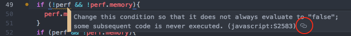

SonarLint offers a fully-integrated user experience in Atom, in conjunction with Linter, the base linter provider of Atom. After installing the package, issues will be reported in the Linter view, and highlighted in the editor.
SonarLint is free, open source, and available on atom.io. Note that it requires a JRE 8 to run, and Linter.

News
- July 12, 2017 - Today we released version 1.0.0 of SonarLint for Atom. JavaScript, PHP and Python are supported. The following analyzers are embedded: SonarJS 3.1.1.5128, SonarPHP 2.10.0.2087 and SonarPython 1.8.0.1496.
Frequently Asked Questions
-
Which languages are supported?
JavaScript, PHP and Python are currently supported.
-
How to start SonarLint analysis?
SonarLint analysis is automatically triggered when you type code and also when you open a file.
-
How to see rule description?
Full rule description is available in your web browser. You can open it using the link icon of the highlighted issue in the editor view: 
-
Is connected mode supported?
Not yet. Please follow and vote for https://jira.sonarsource.com/browse/SLATOM-8
Contribute
SonarLint for Atom is open source under the LGPL v3 license. You can fork us on GitHub, and submit Pull Requests. Feel free to fix bugs or to implement new features.
Feedback
The preferred way to discuss about SonarLint is by posting on the SonarLint Google Group. We are also constantly monitoring questions posted to StackOverflow. For faster answers mark your StackOverflow questions with [SonarLint] and [atom] tags.